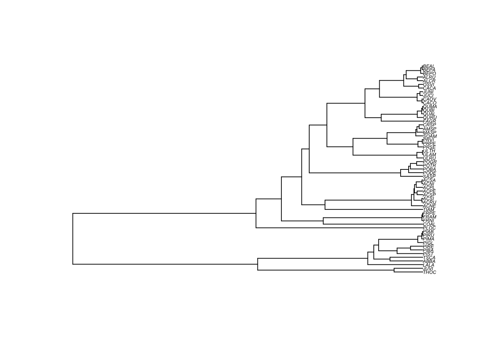

4 Le modèle de régression linéaire
4.1 Théorie
Le modèle linéaire a la forme suivante :
\[\textbf{y} = \alpha + \beta \textbf{x} + \textbf{e}\]
\(\textbf{y}\) est la variable de réponse (ou dépendante), \(\textbf{x}\) est la variable explicative (ou indépendante), et \(\textbf{e}\) représente les résidus ou en d’autres termes la variation non expliquée par le modèle. Pour un modèle de régression linéaire simple, cela représente la distance entre les observations (c’est-à-dire les données réelles) et la ligne de régression (c’est-à-dire la prédiction du modèle) le long de l’axe \(y\). Les paramètres \(\alpha\) représentent l’ordonnée à l’origine, qui es…
Obtenir des estimations fiables avec une régression linéaire implique que les données respectent plusieurs hypothèses, parmi lesquelles la normalité, l’homogénéité, \(X\) fixe, l’indépendance et la spécification correcte du modèle. Nous ne passerons pas en revue toutes ces hypothèses ici, mais nous nous concentrerons sur l’une d’entre elles, souvent violée lorsque les données sont structurées phylogénétiquement, qui est l’indépendance. Cette hypothèse est importante car un manque d’indépendance inval…
Vous obtenez une violation de l’indépendance lorsque la valeur \(\textbf{y}_i\) à \(\textbf{x}_i\) est influencée par d’autres \(\textbf{x}_i\). Évidemment, cela peut se produire avec des données structurées phylogénétiquement, car une variable de réponse est plus susceptible de réagir de manière similaire chez des espèces étroitement apparentées, car elles partagent de nombreux caractères par filiation. En d’autres termes, la valeur \(y\) d’une espèce n’est pas complètement indépendante de la valeur \(y\) d’un…
4.2 Pratique
Pour fournir des exemples pratiques dans cet atelier, nous utiliserons un jeu de données de traits fonctionnels d’arbres de la province de Québec (Paquette, Joly, and Messier 2015). Le jeu de données comprend un certain nombre de traits fonctionnels des plantes et une phylogénie moléculaire construite à l’aide des marqueurs rbcL et matK. Le jeu de données dont vous avez besoin pour exécuter les exemples se trouve déjà dans le dossier /data/ du dépôt github. Cependant, vous pouvez également les télécharger en …
Avant d’analyser les données, nous commencerons par ouvrir les données et l’arbre phylogénétique et les nettoyer pour ne conserver que les espèces présentes à la fois dans l’arbre et dans le tableau des traits. Cela est nécessaire car certaines espèces supplémentaires ont été incluses dans l’analyse phylogénétique.
require(ape)
# Ouvrir les documents ; cela suppose que vous êtes dans le répertoire principal du dossier de l'atelier
seedplantstree <- read.nexus("./data/seedplants.tre")
seedplantsdata <- read.csv2("./data/seedplants.csv")
# Supprimer les espèces pour lesquelles nous n'avons pas de données complètes
seedplantsdata <- na.omit(seedplantsdata)
# Supprimer les espèces de l'arbre qui ne sont pas dans la matrice de données
species.to.exclude <- seedplantstree$tip.label[!(seedplantstree$tip.label %in% seedplantsdata$Code)]
seedplantstree <- drop.tip(seedplantstree,species.to.exclude)
# Supprimer l'objet inutile
rm(species.to.exclude)
# Ordonner l'arbre pour qu'il soit plus esthétique lors du tracé
seedplantstree <- ladderize(seedplantstree, right = FALSE)
# Maintenant, regardons l'arbre
plot(seedplantstree,cex=0.4)
Maintenant, nous pouvons jeter un œil aux données, puis ordonner le trait des plantes pour qu’il soit dans le même ordre que les espèces de l’arbre.
## Code Species.name Occurrence maxH Wd Sm Shade N
## 1 ABBA Abies balsamea 7759 25 0.34 7.6 5.0 1.66
## 2 ACNE Acer negundo 0 20 0.44 34.0 3.5 2.50
## 3 ACNI Acer nigrum 1 30 0.52 65.0 3.0 1.83
## 4 ACPE Acer pensylvanicum 665 10 0.44 41.0 3.5 2.22
## 5 ACPL Acer platanoides 0 15 0.51 172.0 4.2 1.99
## 6 ACRU Acer rubrum 3669 25 0.49 20.0 3.4 1.91# Nommer les lignes du data.frame avec les codes des espèces utilisés comme étiquettes d'arbre
rownames(seedplantsdata) <- seedplantsdata$Code
# Ordonner les données dans le même ordre que les étiquettes de l'arbre. Dans cet exemple
# précis, c'était déjà le cas, mais c'est une étape importante pour toute analyse.
seedplantsdata <- seedplantsdata[seedplantstree$tip.label,]Maintenant que les données sont prêtes, ajustons un modèle linéaire et essayons d’expliquer la tolérance à l’ombre (Shade) des arbres en utilisant la densité du bois (Wd). En R, une manière très simple de faire une régression est d’utiliser la fonction ‘lm’, qui signifie modèle linéaire. Pour ajuster un modèle linéaire, vous devez dire à la fonction lm quelle variable est la variable de réponse et laquelle est la variable explicative. Cela se fait en utilisant des formules de la forme Shade ~ Wd. La variab…
# Ajuster un modèle linéaire en utilisant les moindres carrés ordinaires (MCO)
shade.lm <- lm(Shade ~ Wd, data = seedplantsdata)
# Imprimer les résultats
summary(shade.lm)##
## Call:
## lm(formula = Shade ~ Wd, data = seedplantsdata)
##
## Residuals:
## Min 1Q Median 3Q Max
## -1.87120 -1.02501 0.05628 0.70132 2.38261
##
## Coefficients:
## Estimate Std. Error t value Pr(>|t|)
## (Intercept) 2.0010 0.7501 2.668 0.010 *
## Wd 1.8130 1.5676 1.157 0.252
## ---
## Signif. codes: 0 '***' 0.001 '**' 0.01 '*' 0.05 '.' 0.1 ' ' 1
##
## Residual standard error: 1.146 on 55 degrees of freedom
## Multiple R-squared: 0.02374, Adjusted R-squared: 0.005992
## F-statistic: 1.338 on 1 and 55 DF, p-value: 0.2525Vous pouvez voir que l’estimation de la pente (ici le paramètre Wd) est 1.81 et qu’elle n’est pas significative (\(p\)=0.252). Les graphiques descriptifs standards obtenus avec plot(shade.lm) montrent qu’il y a une légère variation plus grande dans les résidus pour les faibles valeurs ajustées, mais elles ne sont pas extrêmes. Cependant, une autre façon de violer l’hypothèse d’indépendance est si les résidus sont corrélés phylog…
# Extraire les résidus
shade.res <- residuals(shade.lm)
#
# Tracer les résidus à côté de la phylogénie
# La commande suivante modifie les paramètres graphiques pour un meilleur rendu de l'arbre
op <- par(mar=c(1,1,1,1))
# Vecteur de couleurs pour le tracé de l'arbre
cols <- c("#7570b3","#d95f02")
# Les trois commandes suivantes vont tracer l'arbre, puis des cercles reflétant
# les valeurs résiduelles aux extrémités de l'arbre, et enfin
# ajouter une légende.
# La commande plot trace l'arbre et laisse un espace pour tracer les
# résidus aux extrémités avec l'option 'label.offset=0.01'
plot(seedplantstree,type="p",TRUE,label.offset=0.01,cex=0.5,no.margin=FALSE)
# La commande suivante trace les résidus. l'option 'bg' est pour la couleur de fond.
# Si les résidus sont supérieurs à 0 (shade.res>0), il affichera la première couleur
# (1) du tableau 'cols' et s'il est inférieur à zéro, il affiche la deuxième couleur (2).
# La taille du cercle (l'option 'cex') est relative à la valeur absolue
# des résidus (abs(shade.res). Pour tracer d'autres valeurs, remplacez simplement le
# vecteur 'shade.res' par un autre.
tiplabels(pch=21,bg=cols[ifelse(shade.res>0,1,2)],col="black",cex=abs(shade.res),adj=0.505)
# Imprimer la légende
legend("topleft",legend=c("-2","-1","0","1","2"),pch=21,
pt.bg=cols[c(1,1,1,2,2)],bty="n",
text.col="gray32",cex=0.8,pt.cex=c(2,1,0.1,1,2))
Vous pouvez voir que dans plusieurs cas, des espèces étroitement apparentées ont tendance à avoir des résidus similaires (elles sont de la même couleur, ce qui signifie qu’elles sont du même côté de la pente de régression). Cela est problématique. En effet, cela montre que l’hypothèse d’indépendance de la régression des moindres carrés ordinaires (MCO) ne tient plus et les tests statistiques pour les hypothèses nulles ne sont plus valides. Nous verrons ensuite comment les moindres carrés généralisés phylo…
4.3 Défi no. 1
Dans le data frame seedplantsdata, il y avait plusieurs traits différents. Essayez d’ajuster une régression de la tolérance à l’ombre des arbres (Shade) en fonction de la masse des graines (Sm). En d’autres termes, testez si la tolérance à l’ombre peut être expliquée par la masse des graines des arbres. Ensuite, essayez de voir si les résidus sont corrélés phylogénétiquement.